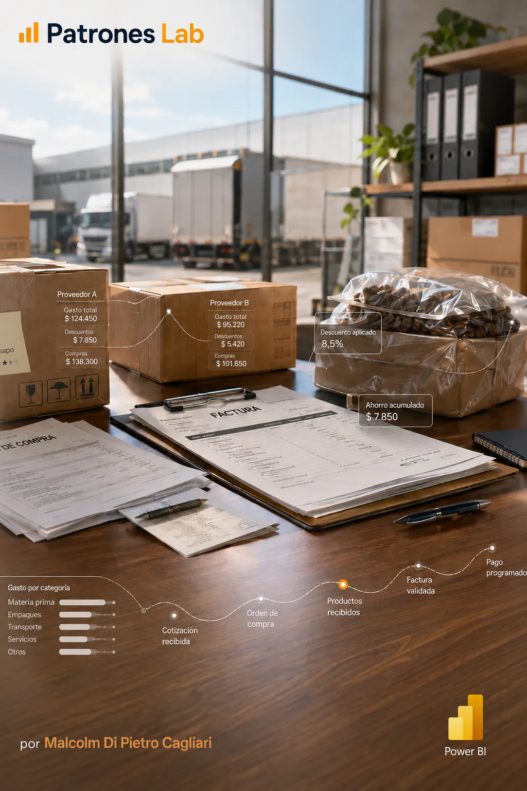

BUSINESS INTELLIGENCE · PROJET 13

Projet 14 · Tableau de bord Power BI
Tableau de bord Power BI · Analyse des dépenses
Rapport exécutif Power BI centré sur l’analyse des dépenses fournisseurs, les tendances mensuelles d’achat, l’utilisation des remises et la répartition par pays, catégorie et niveau de fournisseur.
CONTEXTE ET OBJECTIF
Le projet utilise les données des achats auprès des fournisseurs pour analyser les montants dépensés, leur évolution d’un mois à l’autre et leur concentration par fournisseur, article et catégorie. Chaque facture identifie un achat, tandis que ses lignes détaillent les articles inclus et leurs montants. Ces informations permettent d’étudier à la fois la dépense totale et les produits qui la composent.
Les données comprennent aussi les informations sur chaque fournisseur, les lieux, les dates et les conditions commerciales enregistrées, comme les remises et les délais de paiement. Dans Power BI, ces tables sont reliées afin d’analyser un même achat sous différents angles. Le modèle inclut également des informations sur les devises et les taux de change, qui donnent du contexte aux opérations.
Ces informations ont servi à construire un tableau de bord avec une page d’accueil de navigation et deux pages d’analyse. "Tendance et répartition des dépenses" montre l’évolution des dépenses dans le temps et leur répartition entre articles, fournisseurs et lieux. "Remises par fournisseur" permet d’examiner les conditions de remise et les montants d’économies associés aux achats.
MODÈLE ET DIAGNOSTIC
Modèle relationnel et indicateurs DAX
Pour construire le modèle, chaque facture a été reliée à ses lignes de détail et aux tables décrivant les fournisseurs, les articles, les lieux et les dates. Ces relations permettent au rapport d’afficher uniquement les opérations concernées lorsqu’un fournisseur ou une catégorie est sélectionné. La table calendrier organise les dates par mois et périodes pour faciliter les comparaisons dans le temps.
Des mesures DAX ont été créées à partir de ce modèle : il s’agit de calculs que Power BI recalcule selon les filtres choisis. Elles comprennent la dépense totale (Total Invoice), le nombre de factures (Invoice Count), les dépenses associées aux remises (Spend with Discount) et les économies sur remises (Discount Savings). Les pourcentages de remise et les délais de paiement sont aussi calculés. Chaque indicateur apporte un éclairage différent sur les achats et les conditions convenues avec les fournisseurs.
Pour suivre l’évolution mensuelle, les dépenses de chaque mois sont comparées à celles du mois précédent. Une mesure récupère le montant de la période précédente (Total Invoice Prev Month) et une autre calcule la hausse ou la baisse en pourcentage (Total Invoice MoM %). La table calendrier permet de comparer des périodes équivalentes.
DAX DE RÉFÉRENCE · DÉPENSES DU MOIS PRÉCÉDENT
Total Invoice Prev Month =
CALCULATE([Total Invoice],
DATEADD('Calendar'[Date], -1, MONTH))Dans cet exemple, CALCULATE évalue la dépense totale du mois précédent et DATEADD décale d’un mois vers le passé les dates analysées. Il s’agit d’une reconstitution pédagogique du calcul, et non d’une transcription vérifiée de la mesure originale du PBIX.
Tendance et répartition des dépenses
La page "Tendance et répartition des dépenses" présente des indicateurs généraux pour connaître le montant total des achats, le nombre de factures enregistrées, la part des dépenses associée aux remises et les économies reflétées dans les données. Un graphique montre l’évolution mensuelle et permet de comparer les périodes pour identifier les hausses, les baisses et les changements dans la composition des dépenses.
DAX DE RÉFÉRENCE · VARIATION MENSUELLE DES DÉPENSES
Total Invoice MoM % =
DIVIDE([Total Invoice] - [Total Invoice Prev Month],
[Total Invoice Prev Month])La formule compare les dépenses du mois courant à celles du mois précédent. Elle calcule d’abord la différence, puis la divise par les dépenses de la période précédente pour obtenir la variation en pourcentage. DIVIDE gère cette division lorsque la valeur précédente est nulle ou indisponible. L’expression est illustrative et doit être comparée au DAX original du PBIX.
La même page ventile les dépenses par catégorie, sous-catégorie et article. Elle présente aussi des comparaisons par pays, ville et niveau de fournisseur, ainsi qu’une carte de répartition géographique. Les filtres permettent par exemple d’observer comment la part de chaque catégorie évolue lorsqu’une période ou un groupe de fournisseurs est sélectionné.
Remises et conditions par fournisseur
La page "Remises par fournisseur" porte sur les conditions commerciales des achats. Elle présente les pourcentages de remise, les délais prévus pour en bénéficier et les délais de paiement, avec deux montants distincts : les dépenses associées aux remises et les économies calculées à partir des enregistrements. Leur lecture conjointe permet de comparer le volume des achats aux conditions de chaque fournisseur.
Les graphiques comparent les fournisseurs selon leur niveau et montrent l’évolution des économies au fil des mois. Ils réunissent aussi les informations sur les dépenses et les remises par ville. Pour faciliter la comparaison entre lieux, le rapport inclut un classement des villes selon les dépenses correspondant à la sélection actuelle.
DAX DE RÉFÉRENCE · CLASSEMENT DES DÉPENSES PAR VILLE
City Spend Rank =
RANKX(ALLSELECTED('Vendor'[Vendor City]),
[Total Invoice], , DESC, DENSE)RANKX permet d’attribuer une position à chaque ville selon ses dépenses. ALLSELECTED prend comme référence les villes incluses dans les filtres actifs, afin que l’ordre change lorsque l’utilisateur modifie la sélection. Il s’agit d’un exemple explicatif de la logique du classement, et non d’une copie vérifiée de son expression DAX dans le PBIX.
Les segments permettent de choisir des dates, des fournisseurs ou des niveaux et d’examiner les indicateurs selon le même critère de sélection. Le pourcentage de remise exprime une condition commerciale ; les dépenses associées aux remises indiquent le montant des achats concernés ; les économies correspondent à une autre mesure du rapport. Les présenter séparément aide à interpréter correctement leurs différences.
LIVRAISON ET APPRENTISSAGE
Le livrable est un tableau de bord Power BI avec une page d’accueil et deux pages interactives. La première permet de suivre l’évolution et la répartition des dépenses ; la seconde réunit les indicateurs de remises et de délais de paiement par fournisseur. Sur les deux pages, les cartes et les graphiques se mettent à jour lorsque la période, la catégorie ou le fournisseur sélectionné change.
Le modèle relie les achats aux fournisseurs, aux articles et aux dates afin que les filtres du rapport affectent tous les indicateurs de manière cohérente. Si de nouvelles opérations sont ajoutées aux sources de données et que le modèle est actualisé dans Power BI, le tableau de bord peut afficher des montants, des variations mensuelles et des remises avec des informations plus récentes, à condition de conserver la structure des données sources.